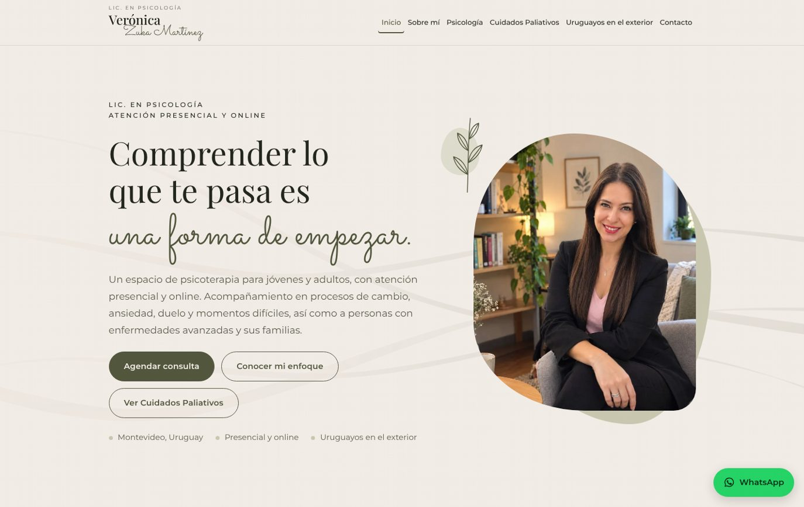

proyectos/verozuka
Sitio para una psicóloga2026
Una psicóloga de Montevideo necesitaba un sitio para presentar sus servicios y recibir pedidos de consulta, también de uruguayos que viven en el exterior. Lo hice como freelance, del contenido a la publicación.
- Sitioverozuka.com
- StackHTML, CSS, JavaScript, PHP
- RolDesarrollo, publicación y configuración del dominio

# Qué hice
- Sitio de 8 páginas en HTML, CSS y JavaScript, sin dependencias.
- Formulario de consulta en PHP que envía al correo del dominio, con consentimiento de uso de datos.
- Dominio, correo, redirecciones a HTTPS y publicación por FTPS en hosting compartido.
- SEO técnico: sitemap, datos estructurados JSON-LD y noindex en las páginas que todavía no tienen contenido.